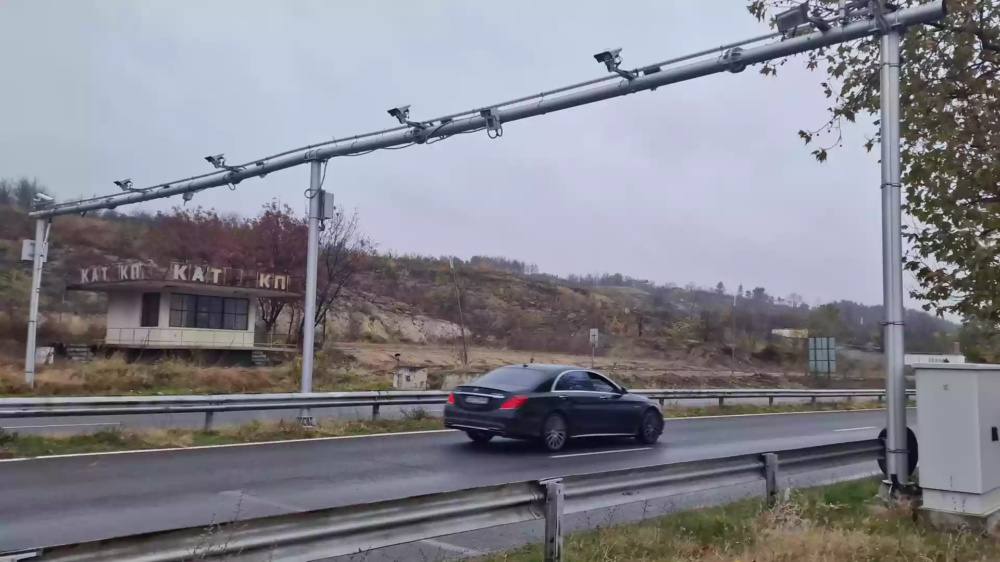

Как работят камерите за средна скорост?
От 5 септември 2025 г. камерите на тол системата официално започват да измерват средната скорост на определени участъци. Системата отчита времето, за което изминавате участъка, и ако средната ви скорост надвишава ограничението, автоматично се издава електронен фиш.

Къде ще работят камерите?
В началото камерите ще следят участъци по:
- Автомагистрала „Тракия“
- Северната скоростна тангента (София)
Контролирани отсечки
- Вакарел ↔ Ихтиман19 км
- Костенец ↔ Мухово (вкл. тунел „Траянови врата“)23 км
- Костенец ↔ тунел „Траянови врата“9 км
- Велинград ↔ Калугерово10 км
- Пазарджик (п.в.) ↔ Цалапица22 км
- Пазарджик (п.в.) ↔ Пловдив Запад28 км
- Пазарджик (п.в.) ↔ Пловдив Север35 км
- Пловдив Изток ↔ Белозем25 км
- Оризово ↔ Чирпан9 км
- Чирпан ↔ разклона за Стара Загора9 км
- Стара Загора ↔ Нова Загора30 км
- Нова Загора ↔ Сливен36 км
- Сливен ↔ Зимница13 км
- Карнобат ↔ Българово26 км
- Българово ↔ Айтос30 км
- Айтос ↔ северния обход на Бургас~8 км
Досега камерите работеха в тестов режим. От 5 септември нарушенията вече се санкционират.
Какво означава това за шофьорите?
Глобата вече не зависи от скоростта ви в една точка, а от средната скорост по целия участък. Кратко забавяне пред камерата не помага – ограничението трябва да се спазва през цялото време.
Заключение
Новите камери са част от мерките за намаляване на катастрофите и за по-безопасни пътища. Карайте внимателно и спазвайте ограниченията.
Как да избегнете глоба?
С приложението Камери БГ винаги знаете ограничението на участъка, по който карате. Работи изцяло офлайн и не събира никакви данни.